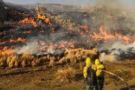

Esta página esta dedicada a la información sobre incendios forestales en Córdoba. Aquí encontrarás datos relevantes, consejos de prevención y actualizaciones sobre la situación actual en la región. Córdoba, ubicada en el centro de Argentina, es una provincia rica en biodiversidad, con extensas áreas forestales y serranas. Sin embargo, la combinación de clima seco, altas temperaturas y actividad humana ha llevado a un aumento en la frecuencia e intensidad de los incendios forestales.
Causas de los Incendios Forestales:
Naturales: Los incendios pueden ser causados por rayos, especialmente durante las tormentas de verano.Las sequias, y el viento fuerte puede proloongar el fuego rapidamente.
Humanos: Muchas veces son provocados por quemas agrícolas descontroladas, negligencia en el manejo del fuego o actos intencionales.La quema de basura o residuos como también la falta de educación sobre la prevención de incendios y el manejo adecuado del fuego puede contribuir a su ocurrencia.
Consecuencias de los incendios
Daño ambiental: La destrucción de la flora y fauna locales afecta la biodiversidad. Muchas especies pueden perder su hábitat, lo que puede llevar a su disminución o incluso extinción.
Erosión del suelo: La pérdida de vegetación aumenta la erosión, lo que puede afectar la calidad del suelo y su capacidad para retener agua, llevando a problemas de desertificación.
Impacto económico: La agricultura y el turismo pueden verse gravemente afectados. Las tierras quemadas pueden tardar años en recuperarse, lo que impacta en los ingresos de los agricultores y en la economía local.
Desplazamiento de comunidades: En casos extremos, los incendios pueden obligar a las personas a abandonar sus hogares, generando crisis humanitarias.
Que hacer en caso de un incendio forestal
En caso de un incendio forestal, mantén la calma y llama a las autoridades para reportarlo,bomberos voluntaeios, policias, ambulancias. Si se indica evacuar, hazlo de inmediato siguiendo los pasos indicados para la evacuación. Mantenerte informado a través de la radio o alertas en línea. Si no podes evacuar, buscar refugio en un lugar cerrado y usar toallas húmedas para cubrirte la nariz y la boca, evitando el humo. Si es seguro, ayuda a vecinos que lo necesiten, no uses vehículos en caminos cercanos al incendio para no bloquear a los servicios de emergencia. La seguridad es lo más importante.
.png)